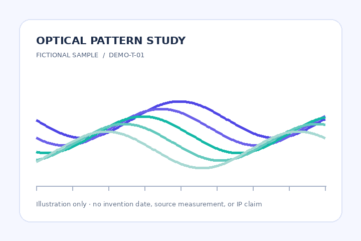

ILLUSTRATIVE · NOT ISSUED

- Issuer statement
- Source / collection
- Declared rights
- Review status
- Signed media SHA-256
WaveSign for IP evidence · illustrative demo
An Evidence Passport organizes an issuer's statements, source links, rights context, and open questions. WaveSign checks a signed file with its matching metadata and the same key. These are separate claims.
Whether signed media, matching sig.json, and the same key verify together under the current operation.
Who issued the statements, whether sources are authoritative, and whether title, consent, or patent rights exist.
One structure · two possible markets
Both records are fictional and use original synthetic images. No patent, collection, owner, or permission is represented as real.

| Evidence | Source / status | Limit |
|---|
Guided test · synthetic files only
These two pre-prepared packages were signed and checked through the existing WaveSign API. The current signer performs your repeat verification. The key below is public and disposable; never use it for a real asset or upload confidential material for this demo.
A fictional optical pattern created for this demo.
Enter this exact disposable key for both checks: wavesign-public-demo-key-2026. The key does not identify an issuer; anyone can see and reuse it for this demonstration.
Open the existing signer in a new tab, select “Verify package,” then choose signed.png, the matching sig.json, and the demo key. A match was observed for this file.
Replace only the media input with changed-sample.png; keep the same sig.json and key. This exact changed file did not verify in our test. A negative result by itself does not explain the cause.
To try signing yourself, download the original synthetic PNG and use the sign tab with a new disposable key. Keep the ZIP it returns.
Explore a possible workflow
A bounded pilot would start with an authorized sample asset, a named workflow owner, and clear review requirements. This preview is for evaluating the concept and its integration boundary; pilot intake opens after the founder reviews the claims and privacy path.
Do not submit confidential IP or a production key to the public signer for this demonstration.